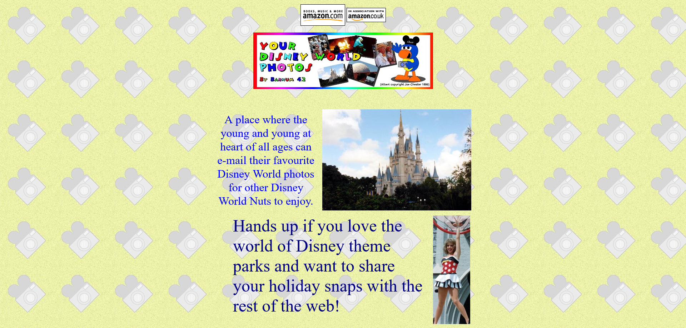
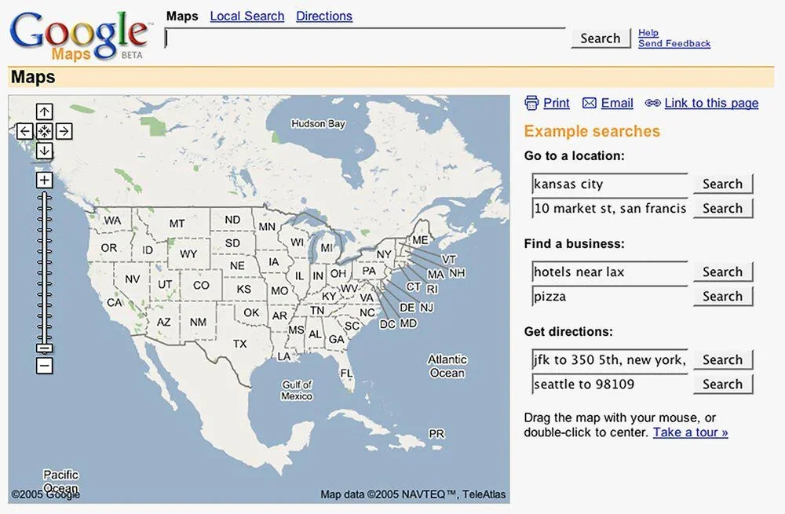

From HTML5 to a living standard
HTML5 was developed jointly by WHATWG and W3C to unify HTML 4, XHTML, and real browser behavior into a single, more precise specification. In 2014 W3C published HTML5 as a Recommendation, while WHATWG continued to maintain an evolving HTML "Living Standard."
HTML5 was not just new elements. It was a complete redefinition of how HTML parsing works, what happens with malformed markup, and how the DOM is constructed. For the first time, two browsers reading the same broken HTML would produce the same result.
Why this era replaced the previous one
The transition era (2004-2013) showed that the web needed native support for audio, video, application structure, and rich form controls. Plugins like Flash filled the gap but created security, accessibility, and performance problems. HTML5 brought these capabilities directly into the browser, removing the need for third-party plugins.
Artifact: The Death of Flash (2010-2017)
Title: "Thoughts on Flash" by Steve Jobs
Year: 2010
Author: Steve Jobs, Apple Inc.
In April 2010, Steve Jobs published an open letter explaining why Apple would not support Adobe Flash on the iPhone and iPad. He cited performance, security, battery life, and the availability of open standards (HTML5 video, CSS3, JavaScript) as alternatives.
Flash had dominated rich web experiences since the late 1990s. Studios like 2Advanced Studios created full-screen Flash websites with heavy animation, cinematic transitions, and immersive sound design. These sites were visually stunning but completely inaccessible to screen readers, invisible to search engines, and required a plugin that crashed frequently.
Why it mattered: Jobs' letter accelerated a shift already
underway. As mobile browsing surpassed desktop, Flash became untenable.
Adobe discontinued Flash Player in December 2020. HTML5's
<video> and <audio> elements,
combined with CSS animations and the Canvas API, replaced what Flash
had provided.

Artifact: Responsive web design article (2010)
Title: "Responsive Web Design"
Year: 2010
Author: Ethan Marcotte, published in A List Apart
Ethan Marcotte coined the term "responsive web design" in a May 2010 article. He proposed that websites should use fluid grids, flexible images, and CSS media queries to adapt to any screen size rather than building separate mobile and desktop versions.
Why it mattered: Responsive design became the standard
approach to handling the explosion of screen sizes from smartphones to
tablets to large monitors. HTML5's <meta name="viewport">
tag and CSS3 media queries made this possible.

Key HTML5 elements and ideas
- New semantic sectioning:
section,article,nav,aside,header,footer, andmain. - Rich media support:
audio,video,source, andtrackfor captioning. - Drawing and interactive graphics with
canvasand related APIs. - New form controls and input types like
email,url,date,range, andcolor. - Precise definitions of parsing, error handling, and DOM behavior to ensure interoperability across browsers.
Major contributors and groups
- Ian Hickson - principal architect and editor of the WHATWG HTML specification for many years.
- HTML Working Group co-chairs Paul Cotton, Sam Ruby, and Maciej Stachowiak - led W3C's HTML5 process.
- WHATWG - a community of browser vendors and experts that maintains the HTML Living Standard.
- W3C - provided formal Recommendations and a governance framework for the Open Web Platform.
- Ethan Marcotte - coined "responsive web design" and changed how the industry builds for multiple devices.
Limitations that remain
- HTML alone still cannot handle complex layouts; CSS and JavaScript are required for modern applications.
- The Living Standard evolves continuously, meaning developers must keep up with changes.
- Browser vendor influence on standards raises questions about corporate control of the open web.
Why a living standard?
The HTML Living Standard is continuously updated so that the specification reflects how browsers actually behave, including edge cases and legacy content. This avoids the lag and fragmentation that occurred when HTML was published only as occasional, versioned documents like "HTML 4.01."
Browser vendors and standards editors can add, adjust, or clarify features incrementally, while preserving backward compatibility for billions of existing pages.